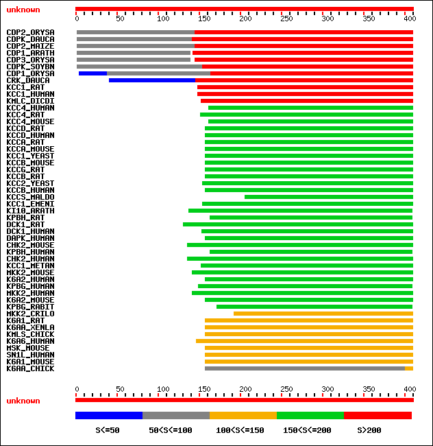
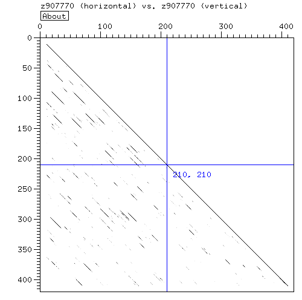

How many domains?
- Run a blast against Swissprot.
- The result indicates clearly that the sequence is made of two domains

- Domain I: 1-150, involved in Calcium binding.
- Domain II: 150-400, kinase activity
- Note that the difference in E-value between the two domains can be caused by their difference in length.
Short domains always apppear as statistically less meaningful.
Analyse of Domain 1
- Compare the sequence with databases of profiles using motifscan[Results]
- The results indicate that there are between 1 (prosite pattern) and 4 ef-hands.
- Look for repeats using dotter or dottlet:

- The dotter is consistant with four repeats in the region indicated by pfam.
- It is possible to extract the four repeats and make a multiple alignment[aln]
- Conclusion:
Of the 4 EF-hands probably contained by the domain, the second is very likely to be inactive, accoring to the pdoc
Analyse of Domain 2
- This domain does not contain any repeat
- Assemble a multiple alignment that shows the regions functionnally important: [aln]
- To assemble this multiple alignment, very distantly related sequences have been chosen
- As a consequence, well conserved regions are very likely to be important
- These regions can also be caracterized using the documentation of one of the sequences
- Conclusion:
This second domain is homologous to a kinase domain, but it is unlikely to be active because of a mutation in the nucleotide binding region.
That mutation seems to be affecting a key nucleotide binding residue
CONCLUSION
If one we had trust blindly the 'general homology results' given by blast and pfsearch, we would have reported that this protein has 4 EF-Hands and one kinase domain. Yet,
thanks to the combined use of the SwissProt annotation and multiple sequence alignments, we know that the kinase is unlikely to be functionnal and that this protein may bind only two Calcium
|